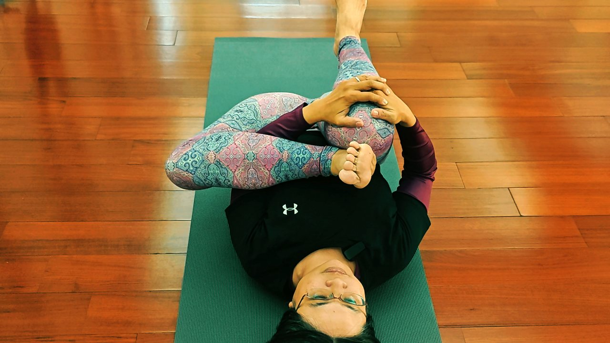

睡前躺下背覺得懸著，怎麼調整支撐比較舒服？

洗完澡終於躺到床上，背卻還像在辦公椅上撐著。你試著把腰壓平，肩膀又跟著出力，明明只想休息，反而更忙了。
睡前躺下覺得背懸著，可以從頭、膝蓋與軀幹的支撐位置找起。腿部下方有墊子時，身體和床面接觸的位置可能改變，感受也可能不同。先用幾分鐘比較仰躺、屈膝或側躺的舒適度，不必把背壓平。持續疼痛或睡眠受影響時，應另尋合適評估。
躺下時背覺得懸著，枕墊要放哪裡？
先試一個原本就能舒服停留的位置。仰躺可觀察屈膝或膝下有低墊時的感受；不喜歡仰躺，也可換成有枕墊支撐的側躺。別為了讓背貼床、胸口更開而加高墊子。想知道修復瑜伽如何用輔具提供支撐，可先看支柱頁；想了解動作中的胸廓活動，可另讀開胸概念。
👆 手機版可左右滑動
| 睡前的感受 | 可試的支撐 | 觀察界線 |
|---|---|---|
| 仰躺覺得腰背懸著 | 試屈膝或膝下放低墊。 | 看看是否較自在，不必把腰壓平。 |
| 仰躺總想翻身 | 試側躺，用枕墊承接頭部或腿部。 | 可隨時換位；不適加劇就停。 |
| 睡眠困擾持續且影響白天 | 記下時間與影響，與醫療專業人員討論。 | 睡前練習不能判定或處理失眠原因。 |
睡不著，或一躺就痛，還要繼續試嗎？
睡前想休息，可先挑不增加不適的姿勢；若躺下反覆疼痛、持續睡不好且影響白天生活，請尋求合適的醫療評估。若主要卡在枕頭或晨起肩頸感受，另看睡姿與枕頭怎麼觀察。 NHS 失眠資訊。
常見問題
一定要躺滿五分鐘嗎？
五分鐘是可用時間。若很快就想換位置，隨時可以調整或結束。
躺著背一定要貼平嗎？
身體和床面的接觸因人與姿勢而異，不必刻意把背壓平。
先記下最有感的日常時刻
只想整理睡前或久坐後的一般身體感受，可以從一個最常出現的時刻開始。
約 2 分鐘，免登入、免加 LINE。做完可用 3 天觀察卡整理日常感受。
開始免費 2 分鐘體態訊號掃描 →延伸閱讀 查看睡姿與枕頭的觀察方式